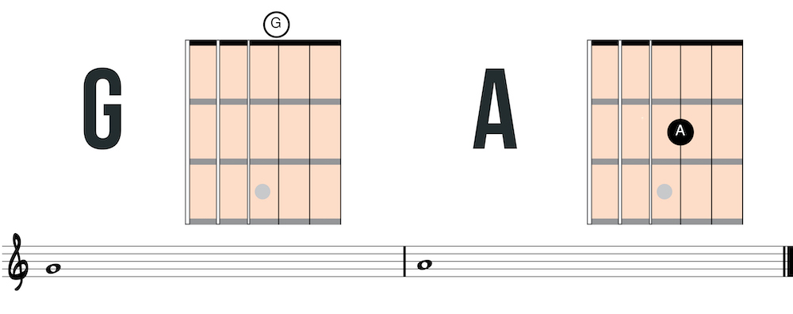
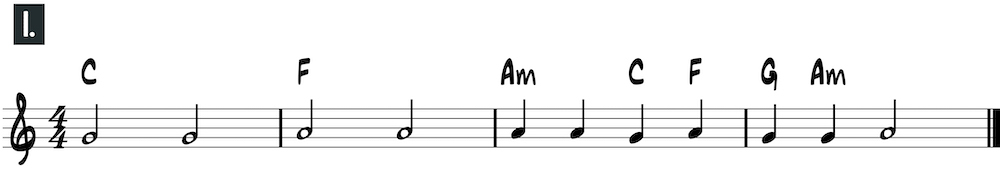
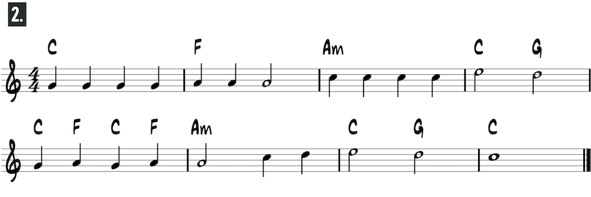
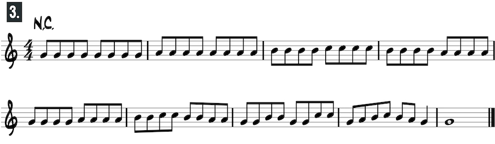
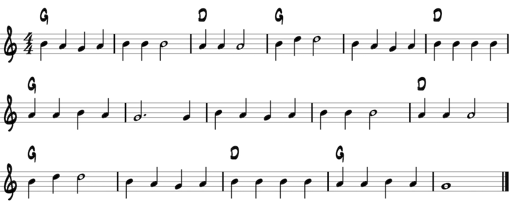
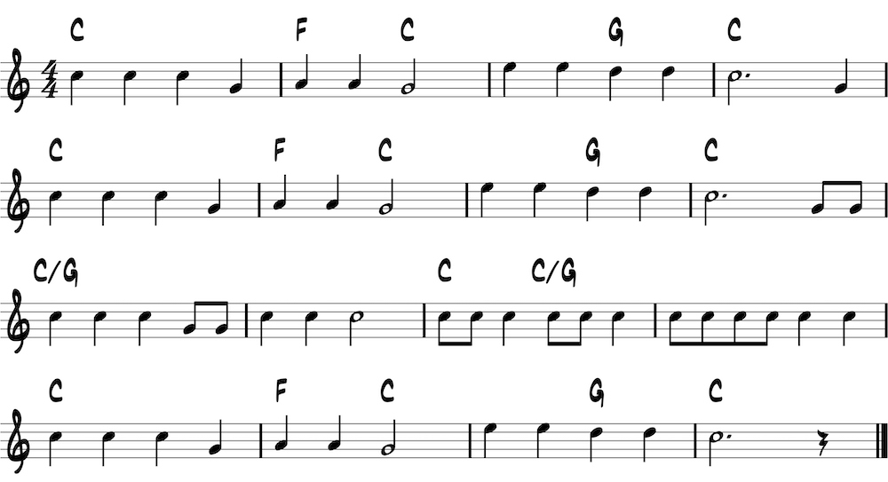
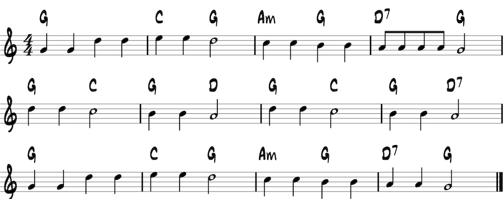

<h1>Third string: open position</h1>
<p>Play A on the second fret with the second finger.</p>






<h2>Mary Had a Little Lamb</h2>


<h2>Old Macdonald</h2>


<h2>Twinkle, Twinkle Little Black Sheep Alphabet</h2>
